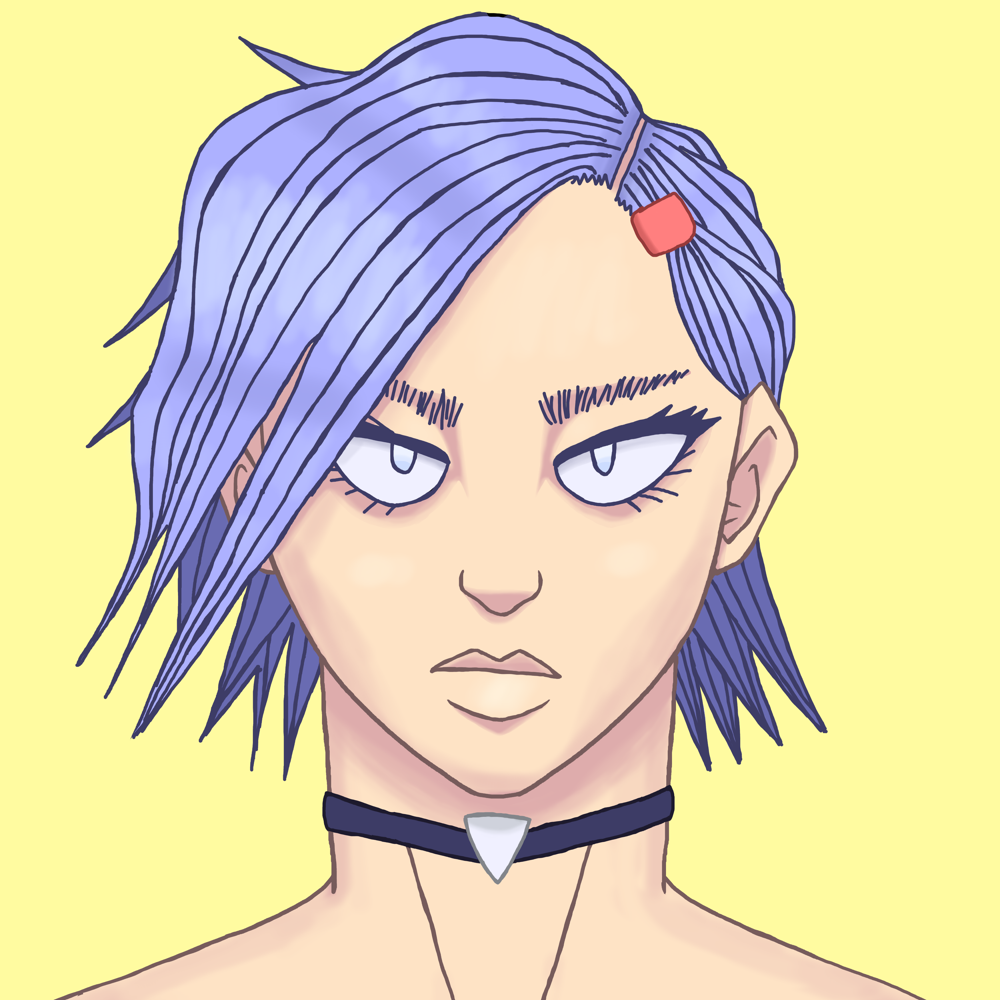
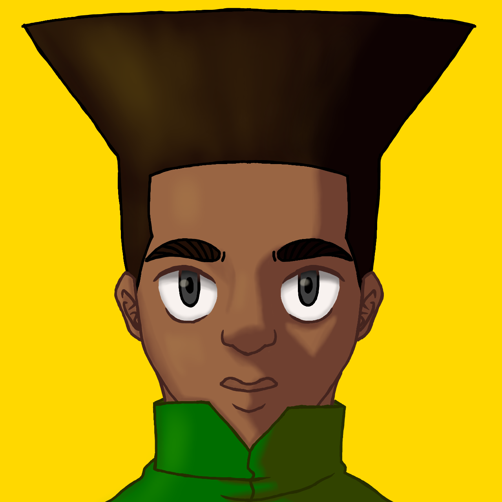
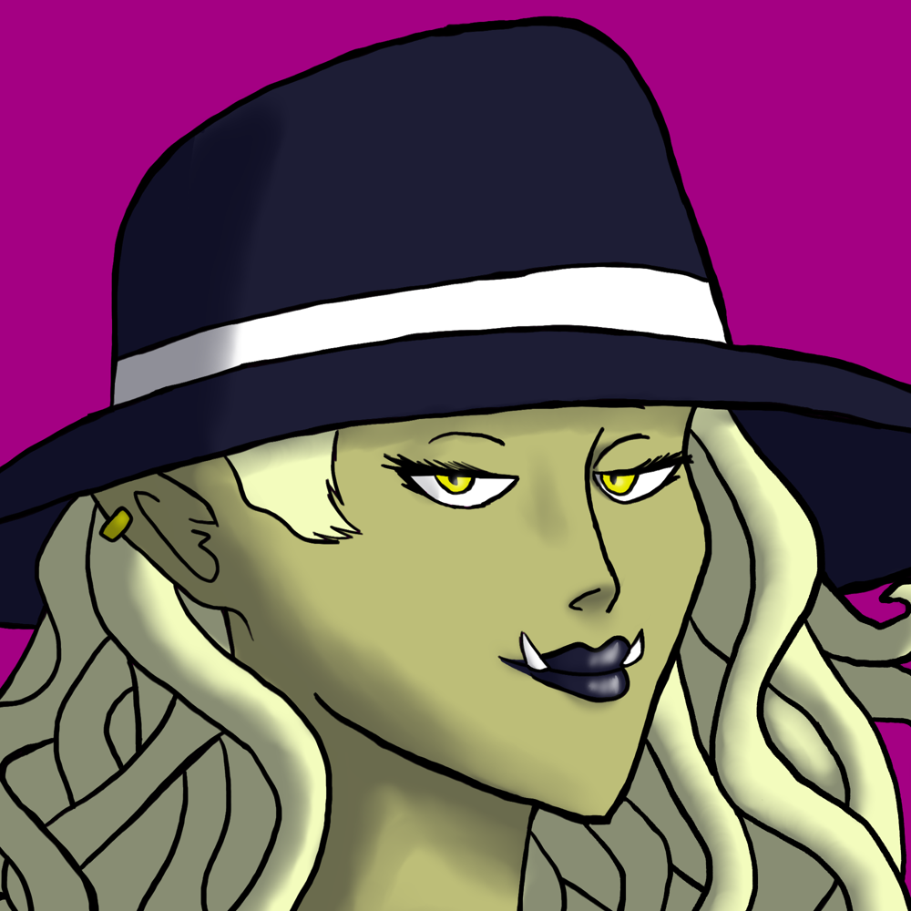
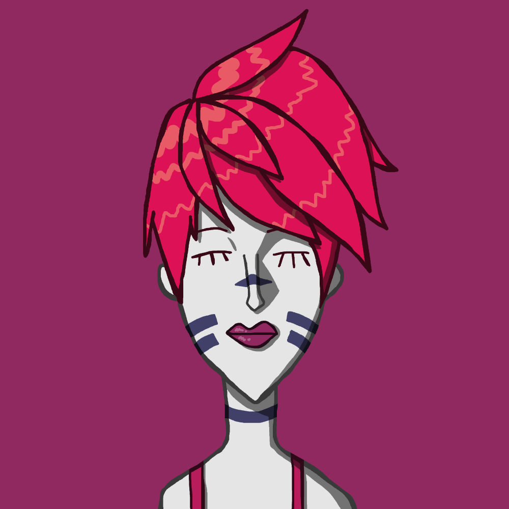

Holy Brands
Holy Brands are special tatoo-like marks on a person's body that give them special powers thanks to a pact that said person made with a god. It is believed
that these abilities have some hereditary quality to them that allows their power to be passed down from generation to generation.
Dons





While the King may be the ruler of Newtopia City, the most powerful people in the city are the five Dons: Don Pink, Don Blue, Don Green, Don Yellow and Don Red.
Each of the Dons controls a significant part of Newtopia's major industries. Don Pink is the leader of the Knight Force. Don Blue dominates the real estate market.
Don Green controls many of Newtopia's hospitals. Don Yellow is the head of the city's school system. Don Red runs the Red Casino. Typically, if a Don leaves their
position, they will decide who will take their place as the next Don.
Knight Force
Starless Knight


Basically fodder. This is the bottom of the Knight totem pole. Once a Knight finishes the Knight Academy, he starts off as this rank.
Bronze Star Knight


Low ranked Knight. A knight must complete the Bronze Assessment to achieve this rank.
The Bronze Assessment is divided into 3 parts:
Knowledge Test - A test of your basic knowledge of the Knight Force and Newtopia.
Fitness Test - A test of your physical capabilities.
Combat Test - A test of your combat skills as a team.
Bronze Star Knights have little influence over the Knight Force, but they are still highly respected by civilians. Knights of this rank
can take on more difficult missions where the stakes are raised and death is a possibility.
Silver Star Knight


Middle ranked Knight. After completing the Silver Trial, Knights are given this rank.
The Silver Trial is divided into 3 parts:
Psychological Test - A test of your current psychological state.
Interrogation Test - A test of your investigation capabilities.
(Secret) Friendship Test - A secret test of your bond as a team.
Before one takes the Silver Trial, one must proctor a Bronze Assessment.
Silver Star Knights have quite a bit of power in the Knight Force. They can vote in proceedings to sway the direction of the Knight Force.
The King won’t entertain the presence of anyone lower than this rank. This is where most Knights end their career. At this rank, Knights are
typically important in their communities.
Gold Star Knight

High ranked Knight. This rank can only be achieved by being appointed by a Knight of Justice.
Gold Star Knights have considerable influence over the Knight Force and the whole city. Those who achieve this rank typically have ties to
other businesses outside of the Knight Force, like film, politics, or technology. It is very rare for a Knight to achieve this rank.
Platinum Star Knight


The top of the Knight ranking. This rank can only be obtained by being appointed by the King.
In Newtopia, those who achieve this rank join a special group known as the Knights of Justice, a team of the most powerful Knights who control the entire city from behind the scenes.
These knights tend to operate in groups of two. It is extremely rare for one to even meet a Knight of Justice, let alone become a member. Anyone who achieves this rank is guaranteed
to be wealthy and powerful for the rest of their life, and will go down in history as one of the Greatest Knights of All Time.
Society of Evil


An organization that was once of the vilest and most horrible groups of people on the planet. However, after the old leader's son, Flat Top, took over, he swore to try
to turn the Society of Evil into a good organization, because being evil was out of style. Being a member of the Society of Evil gets you various benefits like a monthly paycheck,
free health insurance, and free dental insurance. The Society of Evil is divided into many different families, and usually they come together for a yearly meeting.